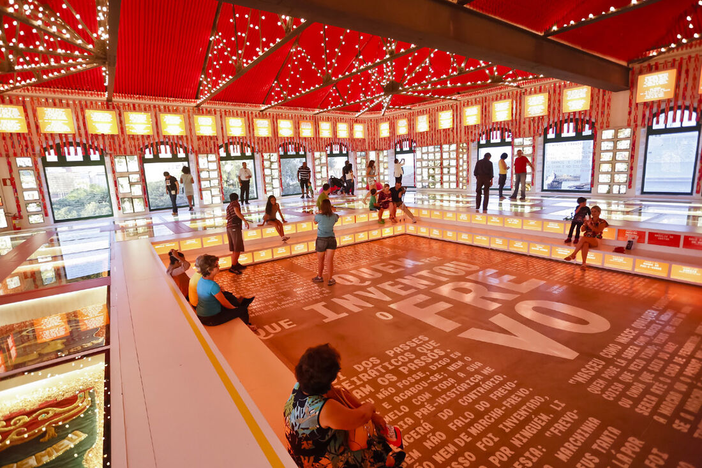
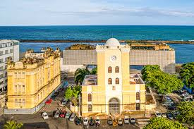

Explore mais sobre a rica cultura e história da região
O Paço do Frevo é um museu interativo dedicado ao frevo, a dança e música que é patrimônio cultural do Brasil. O espaço celebra essa forma de arte por meio de exposições, aulas e apresentações.
O Cais do Sertão é um museu que homenageia a cultura nordestina, especialmente a vida e a obra de Luiz Gonzaga. Com exposições interativas, ele oferece uma experiência imersiva na história e nas tradições do sertão.
 Voltar para o Marco Zero